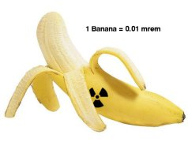

CORRECT!
A typical banana contains about 0.5 gram of Potassium amounting to an activity of about 15 Bq and a corresponding radiation dose of about 0.01 mrem. So yes, if you have lived near a Nuclear power plant for a year, you have only received as much radiation as from eating at most 100 bananas; low enough for your body to take care of it naturally. Living near a nuclear power plant? Not so scary anymore!
The Nuke Quiz #1
Question 3
Bananas are radioactive! Eating how many bananas would be equivalent to the amount of radiation dose you receive from living near a nuclear power station?
